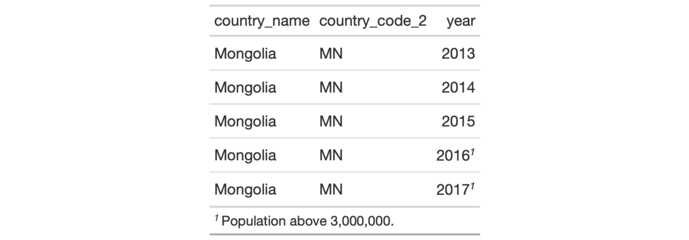

| cols_hide {gt} | R Documentation |
The cols_hide() function allows us to hide one or more columns from
appearing in the final output table. While it's possible and often desirable
to omit columns from the input table data before introduction to the gt()
function, there can be cases where the data in certain columns is useful (as
a column reference during formatting of other columns) but the final display
of those columns is not necessary.
cols_hide(data, columns)
data |
A table object that is created using the |
columns |
The column names to hide from the output display table. Values provided that do not correspond to column names will be disregarded. |
The hiding of columns is internally a rendering directive, so, all columns
that are 'hidden' are still accessible and useful in any expression provided
to a rows argument. Furthermore, the cols_hide() function (as with many
gt functions) can be placed anywhere in a pipeline of gt function
calls (acting as a promise to hide columns when the timing is right). However
there's perhaps greater readability when placing this call closer to the end
of such a pipeline. The cols_hide() function quietly changes the visible
state of a column (much like the cols_unhide() function) and doesn't yield
warnings or messages when changing the state of already-invisible columns.
An object of class gt_tbl.

4-7
cols_unhide() to perform the inverse operation.
Other Modify Columns:
cols_align(),
cols_label(),
cols_merge_n_pct(),
cols_merge_range(),
cols_merge_uncert(),
cols_merge(),
cols_move_to_end(),
cols_move_to_start(),
cols_move(),
cols_unhide(),
cols_width()
# Use `countrypops` to create a gt table;
# Hide the columns `country_code_2` and
# `country_code_3`
tab_1 <-
countrypops %>%
dplyr::filter(country_name == "Mongolia") %>%
tail(5) %>%
gt() %>%
cols_hide(
columns = c(
country_code_2, country_code_3
)
)
# Use `countrypops` to create a gt table;
# Use the `population` column to provide
# the conditional placement of footnotes,
# then hide that column and one other
tab_2 <-
countrypops %>%
dplyr::filter(country_name == "Mongolia") %>%
tail(5) %>%
gt() %>%
cols_hide(
columns = c(country_code_3, population)
) %>%
tab_footnote(
footnote = "Population above 3,000,000.",
locations = cells_body(
columns = year,
rows = population > 3000000
)
)